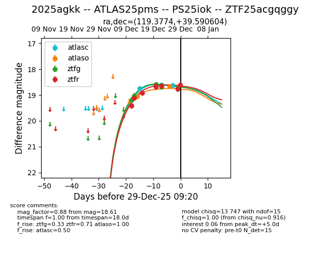
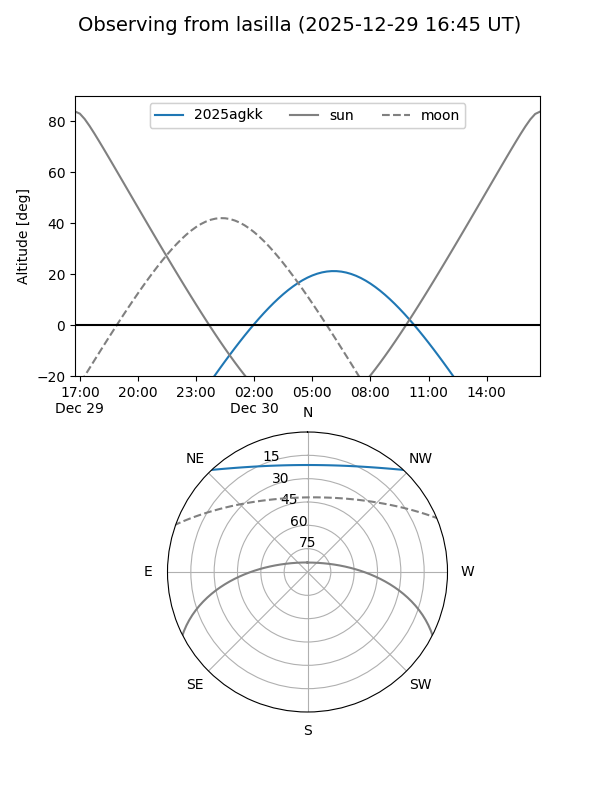
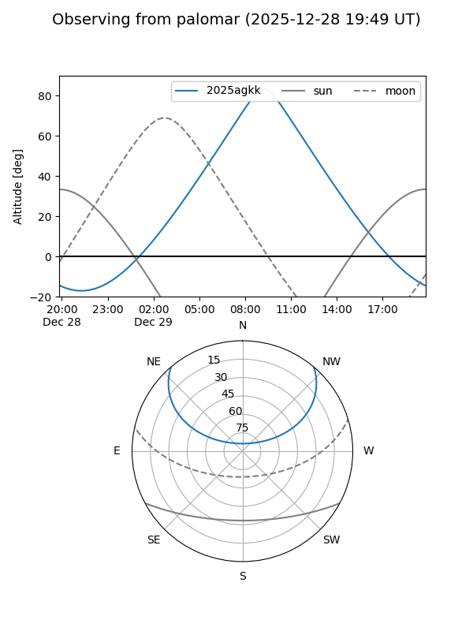
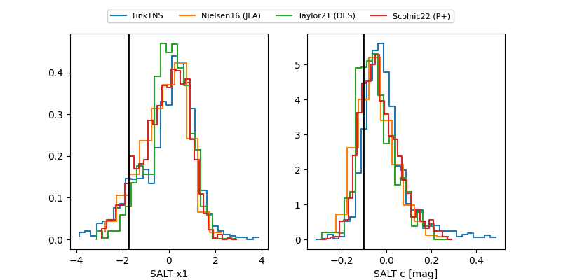

2025agkk
Target 2025agkk at 2025-12-23 08:52
Aliases and brokers:
FINK: fink-portal.org/ZTF25acgqggy
Lasair: lasair-ztf.lsst.ac.uk/objects/ZTF25acgqggy
ALeRCE: alerce.online/object/ZTF25acgqggy
TNS: wis-tns.org/object/2025agkk
YSE: ziggy.ucolick.org/yse/transient_detail/2025agkk
alt names
ZTF25acgqggy (ztf,fink_ztf)
2025agkk (tns,yse)
ATLAS25pms (atlas)
PS25iok (panstarrs)
Coordinates:
equatorial (ra, dec) = 119.3774,+39.59060
equatorial (HMS+DMS) = 07:57:30.59,+39:35:26.18
galactic (l, b) = (180.6196,+29.05132)
Flags:
Photometry:
last atlasc=18.61, atlaso=19.06, ztfg=18.69, ztfr=18.64
2 atlasc, 1 atlaso, 6 ztfg, 6 ztfr detections
Lightcurve

Visibility


Additional plots
